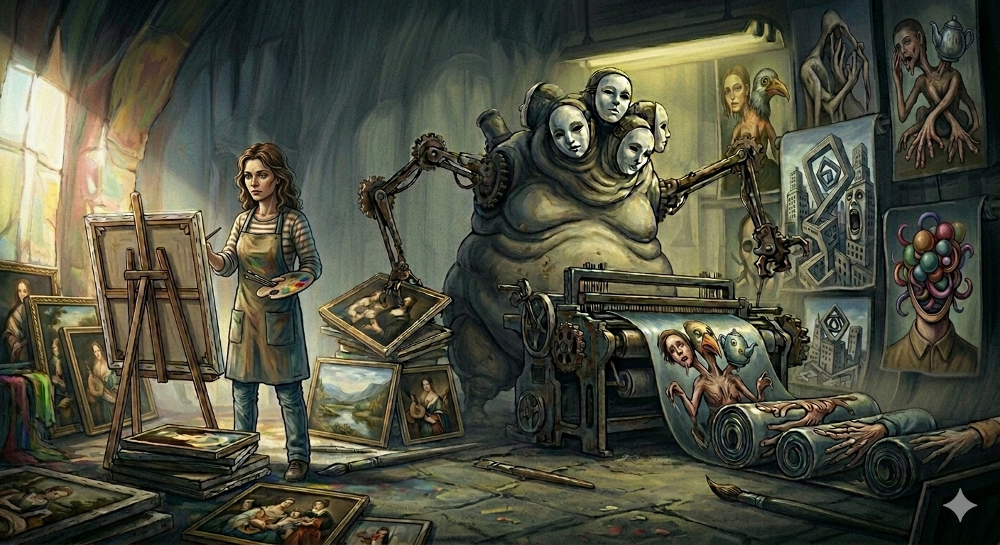

The Impact on the Creative Industry
By mid-2026, the initial novelty of generative imagery has given way to a stark reality: the devaluation of human craftsmanship. The industry has seen a massive influx of "good enough" content, which has effectively gutted the entry-level market for concept artists and illustrators. Companies increasingly prioritize speed and cost-cutting over the unique soul and intentionality that a human artist brings to a project. This shift doesn't just threaten livelihoods; it threatens the very evolution of visual culture, as machines can only remix what has already been created.
Furthermore, the ethical concerns regarding data harvesting remain a festering wound. Most high-end models used today were built on the backs of millions of artists who never consented to their work being used to train their own replacements. This "originality debt" has created a landscape where intellectual property is harder to defend than ever. The saturation of the market with synthetic media has also made it incredibly difficult for emerging human artists to find a platform, as their work is often buried under an endless mountain of algorithmically generated noise.
Identifying Synthetic Art in 2026
While models have become significantly more sophisticated, they still struggle with "logic-based" consistency. To spot AI in 2026, look closely at complex architecture or mechanical designs. Humans understand how a gear or a pillar functions, whereas AI often treats them as decorative textures. You might notice a staircase that leads nowhere, or a violin with an impossible number of strings that merge into the player's hand. Even as finger counts have been "fixed," the way joints bend often retains a slight, uncanny "melted" quality.
Another giveaway is the "over-rendered" sheen. 2026 generative models often produce a specific type of hyper-realistic texture that feels uniform across the entire image. Human artists usually employ "atmospheric perspective" or focal points where some areas are more detailed than others to guide the eye. In contrast, synthetic images often have a distracting level of micro-detail everywhere, from the pores on a face to the distant blades of grass, creating a visual "busy-ness" that lacks intentional composition.